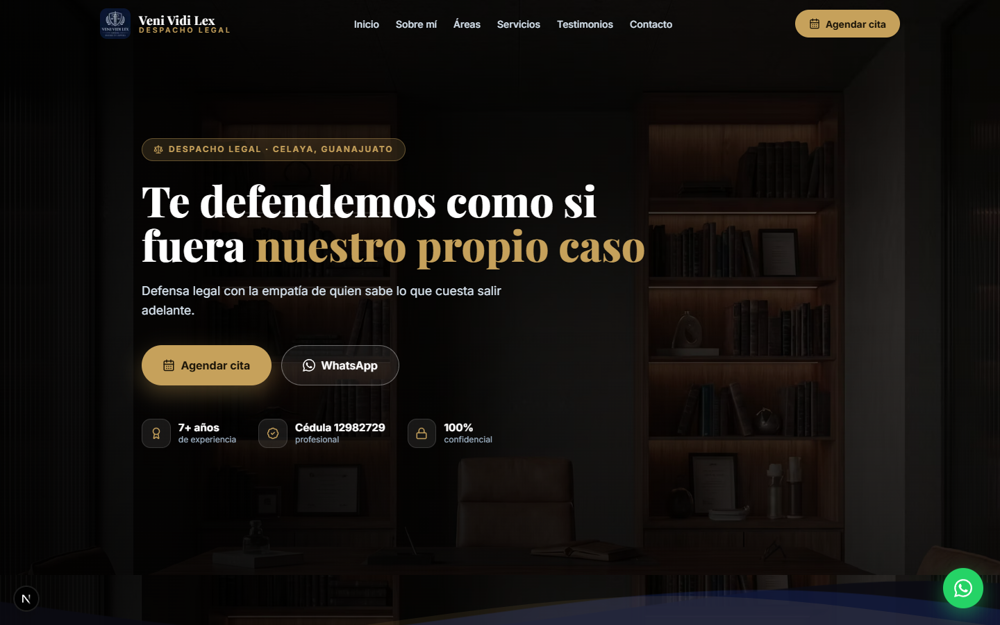
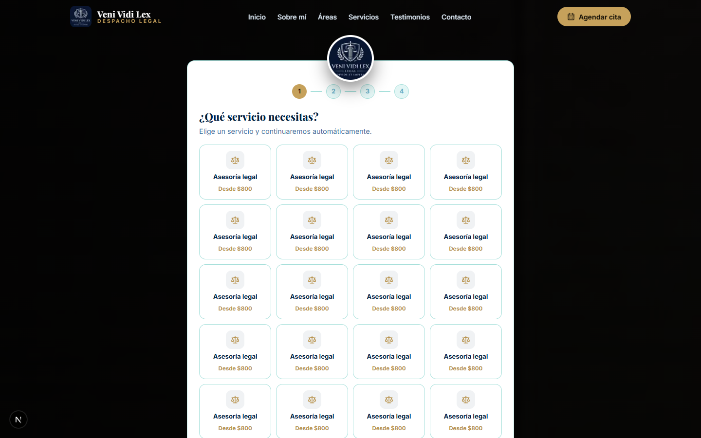
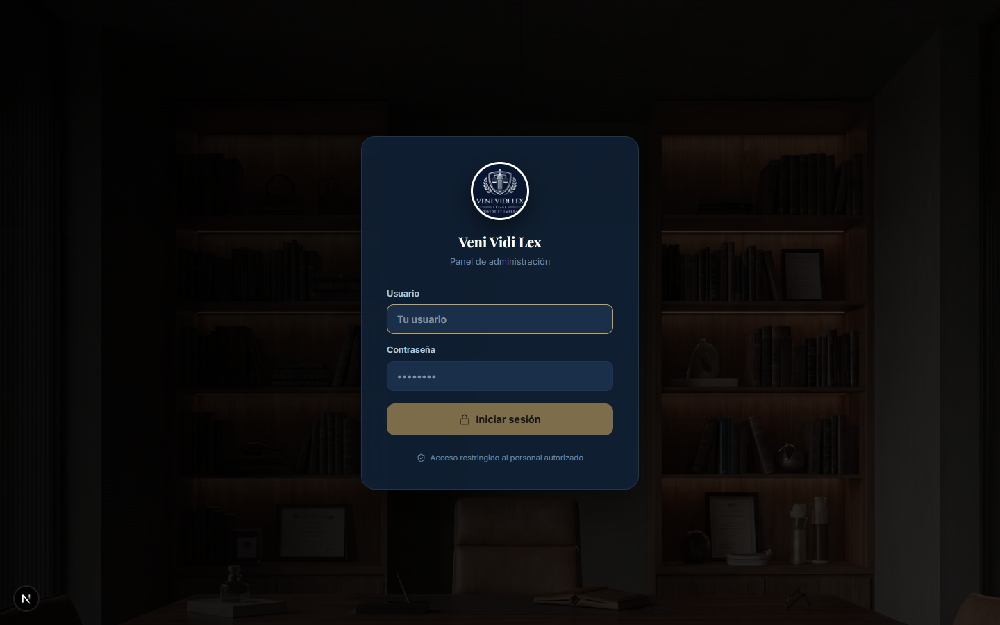
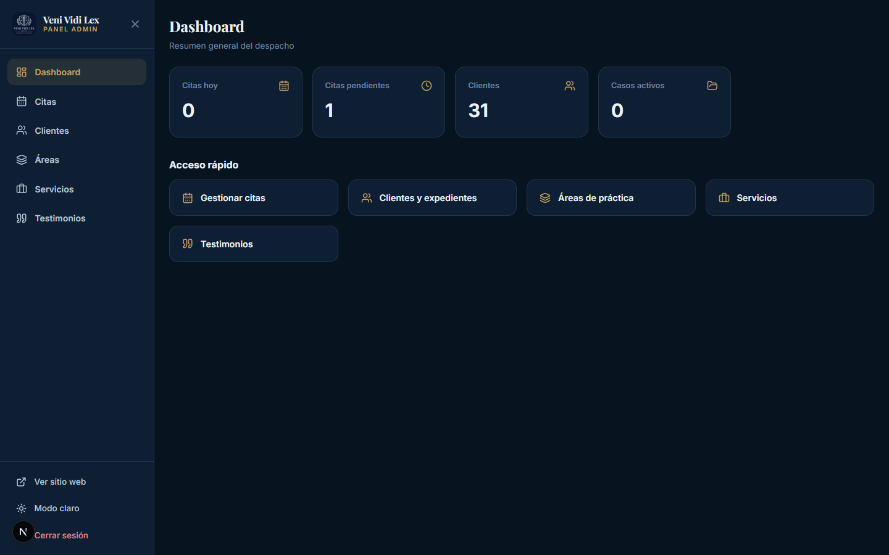
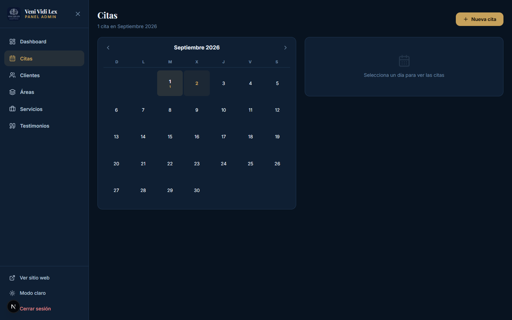
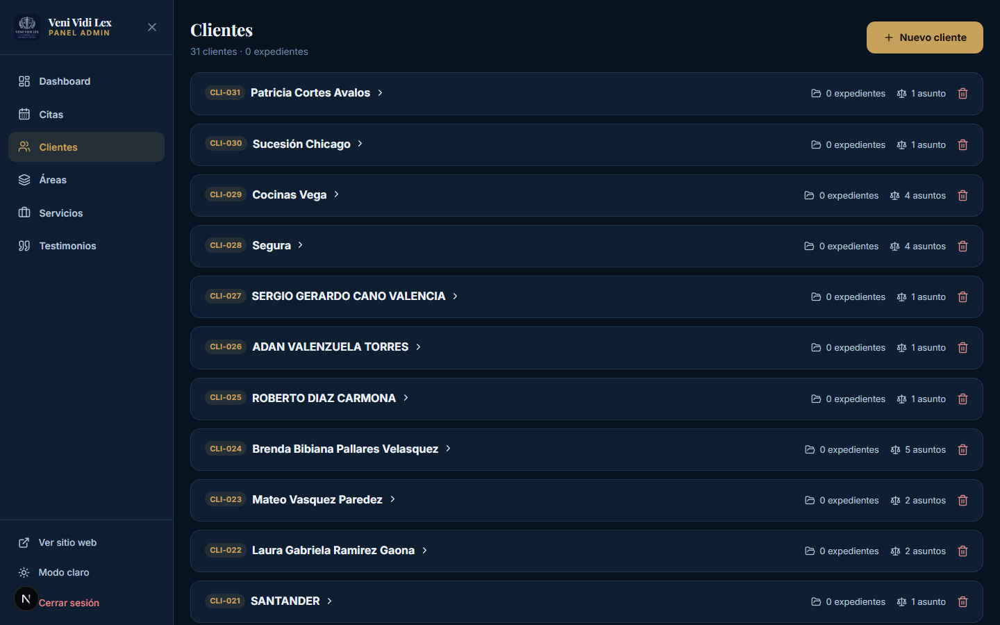
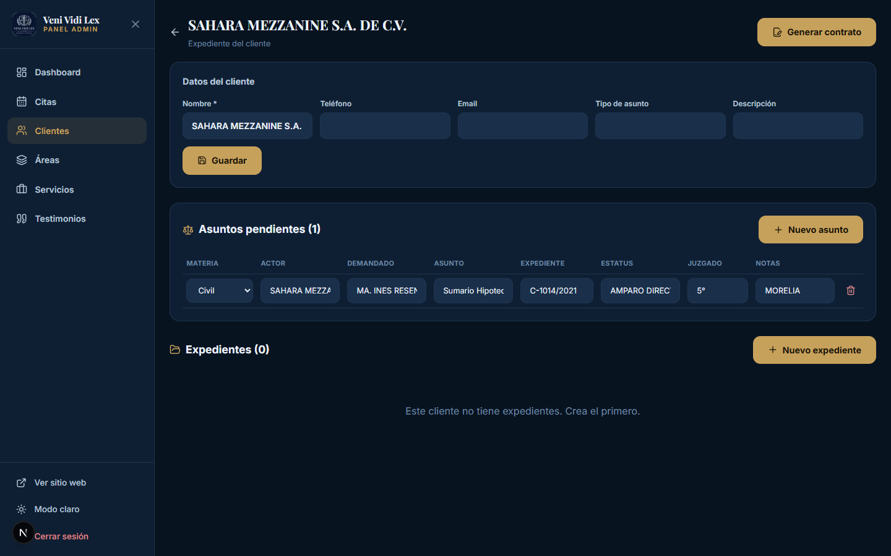
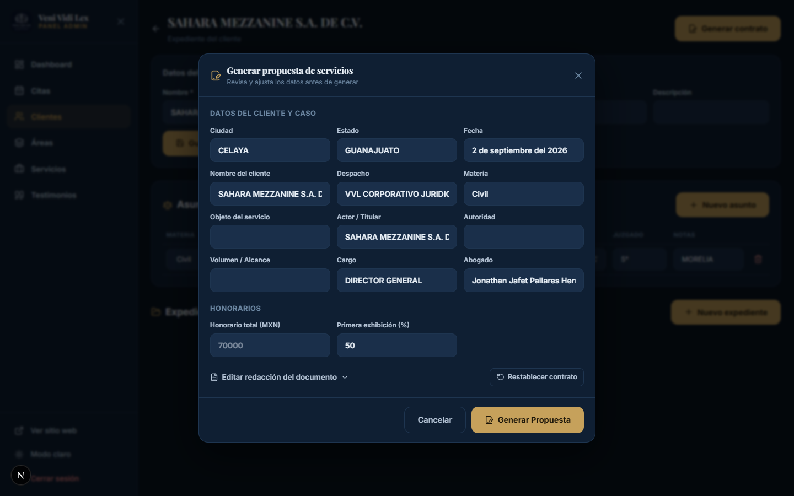
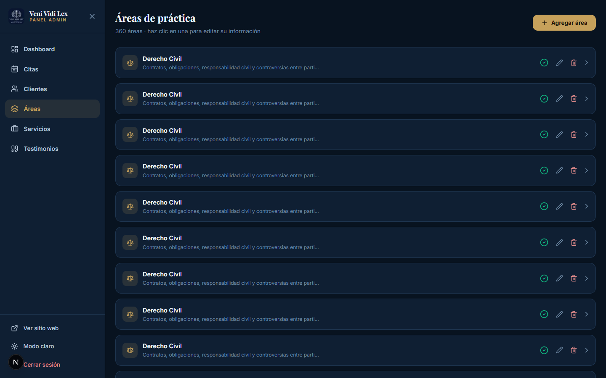
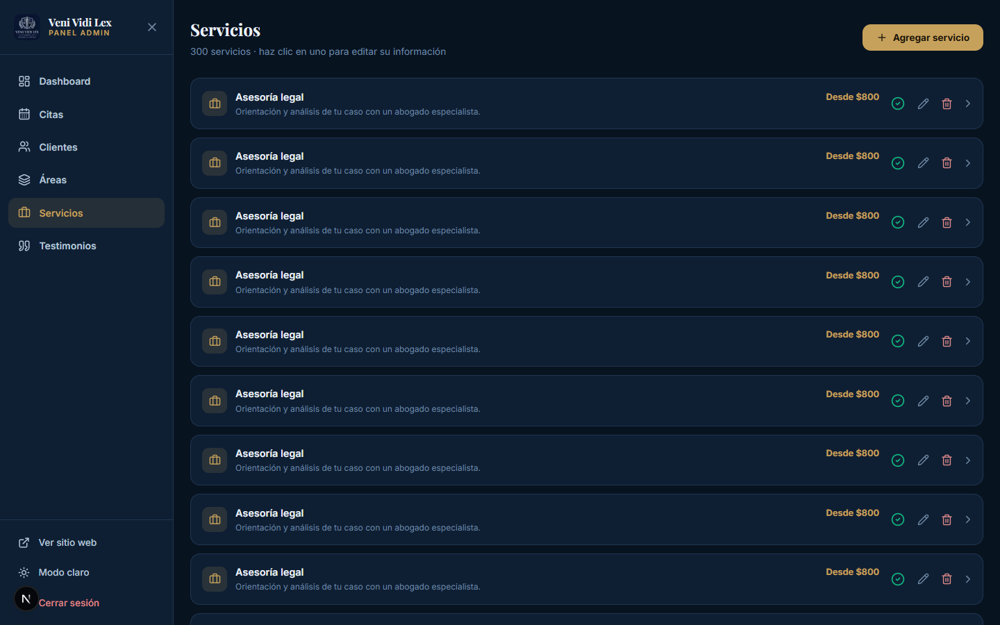

Bienvenido al sistema
Este manual está hecho para todo el equipo del despacho. Aquí aprenderás a usar Veni Vidi Lex: recibir y organizar eventos, dar seguimiento a clientes y expedientes, trabajar tus tareas, configurar tus notificaciones y conectar tu correo.
El sistema tiene dos partes:
- La página pública: lo que ven los clientes cuando visitan el sitio (información del despacho y el asistente para agendar citas).
- El panel de administración: donde el equipo trabaja todos los días (agenda, tareas, clientes, expedientes y configuración).
No necesitas conocimientos técnicos. Todo está pensado para usarse fácilmente desde computadora o celular.
Acceso: El panel está disponible en internet. Solo necesitas tu usuario y tu contraseña para entrar.
1
La página principal
Es la primera pantalla que ven los clientes. Presenta tu despacho y los invita a contactarte o agendar una cita.
Qué encuentra el cliente aquí
- Portada (Hero): el mensaje principal con botones para Agendar cita y WhatsApp.
- Cuéntanos tu caso: situaciones comunes (divorcio, despido, contratos, etc.) que llevan directo al WhatsApp del despacho.
- Conoce a tu abogado: foto, experiencia y valores del despacho.
- Áreas de práctica y Servicios: las especialidades con sus honorarios.
- Contacto: teléfono, WhatsApp, correo y las direcciones de las sucursales con mapa.

Página principal que ven los visitantes con el hero y la invitación a agendar.
Botón de WhatsApp: en la esquina inferior aparece un botón flotante. Cuando un cliente lo usa, el mensaje llega directo al número del despacho.
2
Agendar una cita
El asistente guía al cliente en 4 pasos para reservar una cita desde la página web.
1
ServicioEl cliente elige el servicio que necesita.
2
FechaSelecciona un día disponible (los domingos no están disponibles).
3
HoraElige un horario disponible de la lista.
4
DatosEscribe nombre, teléfono (10 dígitos) y notas opcionales. Confirma la cita.

Asistente para agendar una cita, con el logo del despacho y los 4 pasos.
Clientes que ya existen
Si el cliente ya se atendió antes, puede elegir "Ya soy cliente" y escribir su número de cliente (por ejemplo CLI-001). El sistema completa sus datos y relaciona la nueva cita con su expediente.
Consejo: al terminar, el cliente recibe su número de cliente para futuras citas sin volver a escribir sus datos.
3
Cómo te contactan los clientes
La página tiene varios caminos para que el cliente se comunique de forma directa.
- WhatsApp: desde el botón flotante o desde las secciones de casos y contacto.
- Teléfono: los clientes pueden llamar desde la sección de contacto.
- Correo y redes: el email e Instagram están visibles.
- Mapas: las sucursales muestran su ubicación en Google Maps.
Todo llega al panel: las citas se guardan automáticamente en la Agenda. Los mensajes de WhatsApp llegan al número del despacho.
4
Cómo ingresar al panel
El panel de administración es el centro de trabajo del despacho. Para entrar:
1
Abre el panelAgrega /admin al final de la dirección del sitio, por ejemplo: vvljuridico.com/admin.
2
Escribe tus credencialesIngresa tu usuario y tu contraseña.
3
Haz clic en "Iniciar sesión"Entrarás directo al panel.

Pantalla de inicio de sesión del panel de administración.
Primer ingreso: cambio de contraseña obligatorio
La primera vez que entres, el sistema te pedirá una nueva contraseña. En esa misma pantalla puedes mantener tu usuario o cambiarlo por uno que prefieras.
Importante: la contraseña temporal solo sirve para el primer ingreso. Elige una contraseña segura y no la compartas con nadie. Por seguridad, cada persona tiene su propio usuario.
¿Olvidaste tu contraseña? Contacta al soporte del sistema para que te la restablezca. Solo el superadministrador (soporte de la agencia) puede crear usuarios y restablecer contraseñas.
5
Panel principal (Dashboard)
Al ingresar verás el Dashboard: un resumen de la actividad del despacho.
- Citas hoy: cuántas citas hay para el día.
- Citas pendientes: las que aún no se confirman.
- Clientes: el total de clientes registrados.
- Casos activos: los expedientes en curso.
Debajo están las tarjetas de acceso rápido a las secciones del panel.

Panel principal con las tarjetas de resumen y el acceso rápido.
Menú lateral: a la izquierda está el menú con las secciones. Incluye Dashboard, Agenda, Despacho (que agrupa Áreas, Servicios y Equipo Legal) y, según tu perfil, Tareas, Clientes, Conexiones, Historial, Usuarios y Configuración. La sección Despacho inicia cerrada y se despliega con la flecha. Abajo del menú verás una etiqueta con tu nombre y tu color de usuario, debajo el acceso Ver sitio web, el cambio de modo claro/oscuro y Cerrar sesión.
6
Agenda y eventos
Aquí se organiza todo lo del despacho: citas con clientes, diligencias, eventos y actividades internas.
Tipos de evento
- Cita con cliente: una consulta o reunión con un cliente. Es la única que crea/vincula al cliente automáticamente.
- Diligencia: trámites, audiencias, notificaciones o gestiones.
- Evento: actividades internas del despacho.
- Otro: cualquier actividad que escribas manualmente (ej. capacitación, auditoría).
Cada tipo tiene su color, y cada evento tiene un responsable (la persona encargada), para que sepas de quién es cada actividad.
Qué puedes hacer
- Ver el calendario: navega entre meses; los días con actividades muestran puntos de color según el tipo.
- Filtrar por responsable: con el selector superior ves solo las actividades de una persona.
- Consultar un día: haz clic en un día para ver sus eventos y el responsable de cada uno.
- Cambiar el estado: Pendiente → Confirmada → Completada → Cancelada.
- Nuevo evento: con el botón Nuevo evento eliges tipo, responsable, fecha, hora y notas.
- Editar o eliminar: abre un evento para modificarlo o quitarlo.

Agenda con el calendario, la leyenda de tipos y el detalle del día.
Recordatorios: si el responsable tiene su correo conectado y verificado, la actividad se envía a su calendario de Zoho y le recuerda automáticamente. También recibe el aviso dentro del sistema (ver secciones 15 y 16).
7
Tareas del equipo y cumplimiento
Aquí se organiza el trabajo del equipo y se mide el avance de cada integrante.
Pestaña "Activas"
- Nueva tarea: escribe el título, la descripción, el responsable, la prioridad (Alta, Media, Baja) y una fecha límite.
- Completar: marca el círculo para dar la tarea por terminada.
- Editar o eliminar: cualquier integrante puede crear, completar, editar y eliminar tareas.
Pestaña "Cumplimiento"
- Muestra cuántas tareas ha completado cada persona, cuántas a tiempo y cuántas tarde.
- Incluye el porcentaje de puntualidad y de cumplimiento de cada integrante.
Memoria del sistema: las tareas completadas se muestran por 7 días y después se limpian automáticamente; las tareas que siguen activas permanecen aunque duren más tiempo.
8
Clientes y expedientes
Aquí está toda la información de los clientes y sus casos. Haz clic en cualquier cliente para abrir su ficha completa.
Lista de clientes
Cada tarjeta muestra el número de cliente, su nombre, teléfono, correo y cuántos expedientes y asuntos tiene.
Filtros y búsqueda (nuevo)
- Buscador: por nombre, código, teléfono o correo.
- Filtro por casos: Todos, con/sin expedientes, con/sin asuntos.
- Filtro por tipo de asunto: muestra solo los clientes de un área o tipo.
- Paginación: los clientes se muestran en páginas de 10 en 10 para navegar más fácil. Usa Anterior / Siguiente o los números de página.

Lista de clientes con buscador, filtros y paginación.
Ficha del cliente
- Asuntos: materia, actor, demandado, asunto, expediente, estatus y juzgado.
- Expedientes: etapa del caso y preguntas/respuestas del cliente.
- Documentos: adjunta documentos del caso con su estado.
- Seguimiento: notas sobre el avance del caso.

Ficha del cliente con sus datos, asuntos y expedientes.
9
Generar una propuesta de servicios (PDF)
Desde la ficha de un cliente puedes crear una propuesta o presupuesto en PDF, listo para entregar.
1
Abre el clienteEn la ficha, haz clic en Generar contrato.
2
Revisa los datosEl formulario ya viene lleno con los datos del cliente, el caso y el despacho. Corrige o completa lo que falte.
3
Escribe los honorariosCaptura el honorario total; el sistema calcula el monto en letra y las dos exhibiciones (50% cada una, ajustable).
4
Genera la propuestaHaz clic en Generar Propuesta y el PDF se descarga.

Recuadro para generar la propuesta, con datos precargados y honorarios.
Personalizar la redacción
- Las píldoras doradas son campos que se llenan solos (cliente, objeto, honorarios, etc.).
- Puedes escribir texto libre, borrar píldoras o agregar más con ＋ Insertar campo.
- Si desordenas el documento, usa Restablecer contrato.
Importante: el PDF no se guarda automáticamente en el sistema. Descárgalo y guárdalo en tu computadora o expediente.
10
Despacho
Despacho es una sección madre que reúne y organiza varias partes del despacho en un solo lugar para navegar más fácil.
Al abrirla verás un pequeño tablero (dashboard) con una tarjeta por cada sección que contiene. Cada tarjeta muestra un resumen (por ejemplo, cuántos elementos hay) y un botón Administrar que te lleva directo a esa sección.
Qué contiene
- Áreas — las áreas de práctica del despacho.
- Servicios — los servicios jurídicos y sus honorarios.
- Equipo Legal — los integrantes del equipo jurídico.
Para el superadministrador (perfil de la agencia), la sección Despacho también agrupa Tareas y Clientes, por lo que verá cinco tarjetas en su tablero.
Menú plegable: en el menú lateral, Despacho inicia cerrado para mantener el menú ordenado y se abre/cierra con la flecha. Si entras a una subsección, se abre automáticamente y se resalta la opción activa.
11
Áreas de práctica
Las áreas son las especialidades del despacho que se muestran en la página pública.
1
Nueva áreaCon Nueva área agrega una especialidad (nombre, descripción e icono).
2
Editar o eliminarModifica un área o quítala si ya no la ofreces.

Pantalla de administración de áreas de práctica.
Visible al instante: los cambios se reflejan de inmediato en la página pública.
12
Servicios
Los servicios son lo que ofrece el despacho, con sus honorarios. Aparecen en la página y en el asistente de citas.
1
Nuevo servicioAgrega nombre, descripción, honorario (ej. "Desde $800") y notas.
2
Editar o eliminarActualiza precios o quita servicios que ya no ofrezcas.

Pantalla de administración de servicios con sus honorarios.
Honorarios claros: los precios que pongas aquí se muestran en la página, así el cliente los ve desde el inicio.
13
Equipo Legal
Aquí se administran los integrantes del equipo jurídico que se muestran en la página pública.
- Nuevo integrante: agrega su nombre, cargo, descripción breve, foto e icono.
- Editar o eliminar: actualiza la información de un integrante o quítalo cuando ya no forme parte del equipo.
Relación con la asignación: los integrantes del equipo son las personas a las que puedes asignar eventos y tareas, y que pueden conectar su correo para recibir recordatorios.
14
Historial de actividad
Registro de todo lo que pasa en el sistema: inicios de sesión, altas y cambios de clientes, expedientes, eventos, tareas y usuarios.
El administrador y el superadministrador pueden ver la actividad del equipo de los últimos 15 días. El historial se muestra en páginas de 20 en 20 y puedes filtrarlo por tipo de acción.
- Filtro por acción: muestra solo un tipo (por ejemplo, altas de clientes).
- Paginación: usa Anterior / Siguiente para avanzar.
- Descargar historial (TXT): genera un archivo de texto con el registro para análisis o respaldo.
Respaldo automático: el día 1 de cada mes el sistema guarda automáticamente el historial del mes anterior como reporte y, una vez guardado correctamente, libera esa memoria.
15
Configuración, notificaciones y recordatorios
Cada persona tiene su propia sección de Configuración en el menú lateral.
Mi cuenta
- Cambiar tu nombre y tu usuario.
- Cambiar tu contraseña (hay un límite de 3 cambios por mes por seguridad).
Notificaciones
- Activar/desactivar las notificaciones.
- Tono: elige el sonido de tus avisos y escúchalo con el botón "Probar".
- Permitir notificaciones en el dispositivo: para que te avise el navegador.
Avisos de eventos próximos
- Elige con cuánta anticipación quieres que te avisen de tus eventos: desde 7 días hasta 1 día, desde 24 horas hasta 30 minutos, o una opción personalizada.
- El sistema te avisa con tono y notificación antes de tus actividades asignadas.
Todo es personal: cada usuario configura su propio tono y sus propios tiempos de aviso sin afectar a los demás.
16
Conexión de correo
Conecta tu correo del despacho para que tus eventos se agreguen a tu calendario y te recuerden automáticamente.
1
Crea una contraseña de aplicación en ZohoEntra a tu cuenta de Zoho Mail → Seguridad → Contraseñas de aplicación y genera una.
2
Conéctala en el sistemaEn Configuración → Conexión de correo, escribe tu correo y pega la contraseña de aplicación.
3
El sistema valida la conexiónSi las credenciales son correctas, verás la etiqueta "Verificado" y el servidor de Zoho detectado (por ejemplo smtp.zoho.com o smtp.zoho.eu). Si algo falla, aparecerá un aviso con la causa y cómo corregirla.
Qué pasa al conectarlo
- Los eventos y tareas que se te asignen se enviarán a tu correo como invitación de calendario.
- Tu calendario de Zoho los registra y te envía el recordatorio según tu configuración de Zoho.
- Puedes actualizar tus credenciales o desconectar tu correo cuando quieras.
Si aparece "Sin verificar"
Tu conexión se guarda aunque la verificación falle, para que puedas corregirla sin volver a capturar todo.
- Usa una contraseña de aplicación: Zoho rechaza tu contraseña normal. Genérala en Zoho Mail → Seguridad → Contraseñas de aplicación.
- Revisa el correo: debe ser tu cuenta real de Zoho Mail (por ejemplo nombre@vvljuridico.com).
- Región de Zoho: el sistema detecta automáticamente el servidor correcto (México/EE. UU., Europa, India, Australia). No necesitas elegirlo.
- Corrige y reintenta: escribe de nuevo la contraseña de aplicación y usa Actualizar credenciales. Si ya la corregiste en Zoho, basta con Reintentar verificación.
- Si el problema continúa, pide apoyo al soporte del sistema.
Privacidad: el administrador puede ver si tu conexión está correcta y qué servidor usa, pero no ve tu contraseña. Solo el soporte del sistema puede revocar una conexión.
17
Usuarios y perfiles
Cada persona del despacho tiene su propio usuario y contraseña. Así cada quien ve lo suyo y todo queda registrado.
Perfiles del sistema
Superadministrador Agencia
Soporte GLA
- Es el perfil de la agencia que administra el sistema.
- Único que puede crear, editar y eliminar usuarios y restablecer contraseñas.
- Ve las secciones Usuarios, Conexiones e Historial.
- Su sección Despacho agrupa Tareas, Clientes, Áreas, Servicios y Equipo Legal.
- Puede entrar "como" otro usuario para revisar y regresar con un clic.
Administrador
Jonathan — Administrador
- Ve y gestiona toda la operación del despacho.
- Ve el historial de actividad del equipo (15 días) y su cumplimiento.
- Crea y organiza eventos y tareas para todo el equipo.
- Gestiona clientes y expedientes.
- Ve el estado de las conexiones de correo (solo lectura).
- Su sección Despacho agrupa Áreas, Servicios y Equipo Legal.
- Edita su propia cuenta y configuración.
Abogados / colaboradores
Usuario
- Ven su agenda y sus tareas asignadas.
- Crean, completan y organizan tareas del equipo.
- Gestionan clientes y expedientes.
- Administran las secciones de Despacho (Áreas, Servicios y Equipo Legal).
- Configuran su tono, sus avisos y conectan su correo.
- Editan su propia cuenta y contraseña.
Usuarios del equipo
| Nombre | Usuario | Perfil |
|---|
| Lic. Jonathan Jafet Pallares Hernández | jonathanvvl | Administrador |
| Lic. Joel Cervantes Rodríguez | joelvvl | Usuario |
| Lic. Priscila López Arce | priscilavvl | Usuario |
| Lic. Martha Beatriz Lizárraga Ruiz | marthavvl | Usuario |
| Lic. Cecilia Fabiola López Aguilera | ceciliavvl | Usuario |
Las contraseñas son personales y se entregan de forma privada. En el primer ingreso el sistema obliga a cambiarlas. Si alguien la olvida, debe pedir apoyo al soporte del sistema para restablecerla.
Sugerencia: no compartas tu usuario. Todo lo que se hace en el sistema queda registrado con el nombre de quien lo hizo.